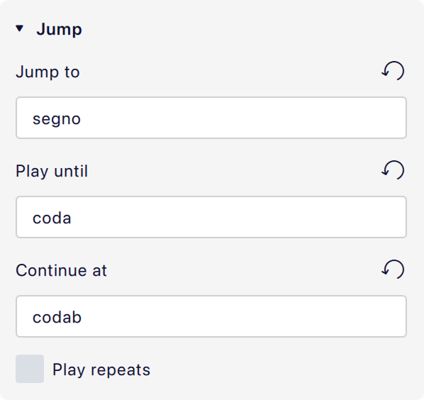

跳转与标记
跳转和标记用于在乐谱中创建反复结构。它们可以在 反复与跳转 面板中找到。
跳转和标记的类型
跳转
跳转是指示从乐谱中某一点跳到其他位置的标记。
| D.C. | 从头反复（代表 da capo）。 |
| D.S. | 从 segno 标记反复（代表 dal segno）。 |
| D.C. al Fine | 从头反复直到 'Fine'。 |
| D.S. al Fine | 从 segno 标记反复直到 'Fine'。 |
| D.C. al Coda | 从头反复直到 'To Coda'，然后跳到 coda。 |
| D.S. al Coda | 从 segno 标记反复直到 'To Coda'，然后跳到 coda。 |
标记
标记是乐谱中带标签的位置。Coda 和 segno 标记指示跳转的目的地：
| Coda | |
| Segno |
Fine 和 To Coda 指示在跳转发生之后某件事应发生的位置：
| Fine | 结束乐曲或段落。它必须与 'D.C. al Fine' 或 'D.S. al Fine' 一起使用。 |
| To Coda | 跳到 coda。它必须与 'D.C. al Coda' 或 'D.S. al Coda' 一起使用。 |
尽管 'To Coda' 项目实际上既是标记又是跳转，但在内部它被视为标记，并具有相应的属性。跳到 coda 的目的地在 'D.C. al Coda' 或 'D.S. al Coda' 项目中指定（见下文 跳转与标记）。
添加跳转或标记
要向乐谱添加跳转或标记：
- 选中一个小节，或小节内的某个项目。
- 在 反复与跳转 面板中单击所需项目。
或者，从面板中拖出一个项目，并将其放到小节上。
Coda 和 segno 放置在小节开头，所有其他跳转和标记放置在小节末尾。
更改跳转和标记的外观
跳转和标记是文本，因此可以像编辑任何其他文本对象一样编辑它们。
标记通常还包含音乐符号（例如 segno 和 coda），这些符号取自乐谱正在使用的 音乐文本字体。这些符号的大小和对齐可以在其 属性 中独立于文本的其余部分进行控制。
要在这些项目中输入音乐符号，请使用 特殊字符 对话框（属性 -> 文本 -> 插入特殊字符）。
更改跳转和标记的播放
使用标签定义播放流程
跳转和标记使用 标签 进行连接，标签是定义播放流程的简单文本标识符。对于大多数乐谱，你不需要更改从面板添加的跳转和标记的默认标签。参见 #标签如何控制播放流程的示例。
要指示乐谱或段落的开始或结束，必须使用以下特定语法：
start是乐谱或段落的开始。end是乐谱或段落的结束。
除此之外，标签可以是任何你喜欢的内容，只要它们正确匹配即可。如果你要创建比默认值更复杂的结构，可以在属性中自定义它们。
标签不会显示在乐谱上，并且与该乐谱上的项目可能包含的文本没有内在联系。
在播放中忽略跳转和标记
要在播放中忽略反复、跳转和标记：
- 在 播放工具栏 中，打开齿轮菜单
- 取消勾选 播放反复
跳转属性

'D.S. al Coda' 的默认设置
- 跳转到： 一旦到达此跳转，播放应跳转到的标记的标签。
- 播放到： 播放应持续到的标记的标签。
- 继续于： 到达 播放到 中指定的标签后要跳转到的标记的标签。如果此字段为空，播放将在 播放到 标签处停止。
- 播放反复： 跳转发生后是否播放反复。
标签如何控制播放流程的示例
上图显示了 'D.S. al Coda' 的默认设置。它描述了到达后应发生以下事情：
- 跳到标签为
segno的标记（这是面板中 segno 项目的默认标签）。 - 从该标签播放，直到标签为
coda的标记（这是面板中 'To Coda' 项目的默认标签）。 - 然后跳到标签为
codab的标记（这是面板中 coda 项目的默认标签）。
由于 播放反复 未勾选，初始跳转之后遇到的任何反复都会被忽略。
标记属性

'Segno' 的默认设置
- 标记类型： 标记的类型（不可编辑）。
- 标签： 标记的标签。它应与某个跳转中引用的标签之一匹配，具体取决于该标记的用途。
- 符号大小： 乐谱上文本中使用的任何音乐符号（coda、segno 等）的点数大小。
- 将符号与小节线对齐： 如果勾选，且项目包含符号，则整个项目会定位为使符号在小节线上方居中。如果取消勾选，则启用下方的对齐按钮，可以选择所需的对齐方式。
跳转和标记样式
反复和跳转的文本样式可在 格式 -> 样式 -> 文本样式 -> 反复文本左 和 反复文本右 中配置。反复文本左 样式用于小节开头的标记（coda、segno），反复文本右 样式用于结尾的标记（其他所有）。
用于符号的音乐文本字体可在 格式 -> 样式 -> 乐谱 -> 音乐文本字体 中更改。